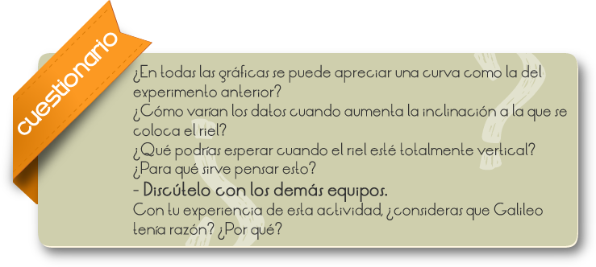
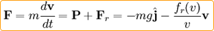

El estudio del movimiento siempre ha sido muy importante para comprender mejor los fenómenos de la naturaleza. En cinemática, la caída libre es un movimiento de un cuerpo dentro del campo gravitatorio terrestre.
El movimiento de la caída de los objetos interviene muchos factores. El medio por el que se desplaza del objeto al caer influye de manera muy importante. Una piedra pequeña tarda menos en caer si lo hace en el agua o, por ejemplo, en otro medio como aceite de carro.
Observar y determinar como es la caída libre de un cuerpo.
1. Forma un equipo de 3 o 4 integrantes y realiza un experimento como el de Galileo.
2. Ponte de acuerdo con los demás equipos para que cada uno mida con un riel en diferentes inclinaciones.
3. Haz varias marcas en tu riel, con separaciones de 0.2 m entre sí. No olvides poner una que indique el punto donde colocarás el balín inicialmente.
4. Acciona el cronómetro y detenlo cuando el balín pase la marca de 0.2 m.
5. Repite esto al menos 5 veces, en cada marca, y registra el tiempo en cada caso.
6. Calcula el tiempo promedio de cada marca.
7. Haz una tabla en tu cuaderno y registra tus datos. Usa papel milimétrico para construir la gráfica.
8. Es probable que tus datos y los de tus compañeros y compañeras no coincidan, aun medidos con las mismas inclinaciones del riel. Aquí lo importante es que verifiques si en cada inclinación se obtiene que la rapidez no sea constante. Es decir, si los puntos, incluso el cero, no se pueden unir con una recta.
Cuestionario
Compara tus resultados con los demás equipos y responde las siguientes preguntas.

Comentarios
El movimiento de la caída libre es un movimiento uniformemente acelerado. Para caídas desde alturas de sólo unos pocos kilómetros o metros, la aceleración instantánea debida sólo a la gravedad es casi independiente de la masa del cuerpo, es decir, si dejamos caer un coche y una pulga, ambos cuerpos tendrán la misma aceleración, que coincide con la aceleración de la gravedad (g). Sabemos por la segunda ley de Newton que la suma de fuerzas F es igual al producto entre la masa del cuerpo y la aceleración. En caída libre sólo intervienen el peso P , que siempre es vertical, y el rozamiento aerodinámico Fr(v) que va en la misma dirección aunque en sentido opuesto a la velocidad. La ecuación de movimiento es por tanto:
